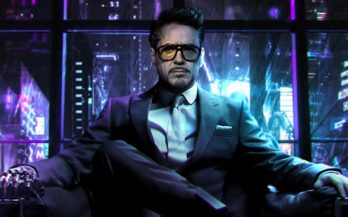

By Zach Johnson
Becoming a Disney Legend the same year as his collaborator and friend Jon Favreau makes the recognition even more meaningful for Robert Downey Jr., who launched the Marvel Cinematic Universe (MCU) with his inimitable turn as Tony Stark in Iron Man. “We thought we’d arrived when the Paramount folks brought us to Mr. Chow’s in 2008. We were like, ‘Dude! We just got invited to a private room at Mr. Chow’s with all the bigwigs! It’s all been leading to this!’” he tells D23 with a laugh. “All these years later, I kind of stayed the course with the Marvel stuff, and Jon branched out to do more stuff for Disney. So, it’s an interesting and cool bit of timing.”
The two men were inducted during the Disney Legends Awards ceremony at D23 Expo 2019 alongside Christina Aguilera, Wing T. Chao, James Earl Jones, Bette Midler, Kenny Ortega, Barnette Ricci, Robin Roberts, Diane Sawyer, Ming-Na Wen, and Hans Zimmer—and Downey, for one, couldn’t wait until August 23. “It’s going to be a ball,” he says. “I’ll be there with bells on, buddy!”
Even after playing Tony in nine movies—10, if you count his uncredited cameo in The Incredible Hulk—Downey isn’t totally ready to say goodbye. “It is a pleasure to have done it, it’s a pleasure to be done, but what I’m realizing more than anything is that it’s like The Godfather Part III: It’s never over!” he laughs. “But in a good way. In a really good way.”
With the MCU left in the capable hands of stars including Chadwick Boseman, Benedict Cumberbatch, Brie Larson, among others, Downey’s excited to see what happens in Phase Four. “There’s all these little connections,” the acclaimed actor says. “I love that I was able to witness Chris Hemsworth transition into arguably the best third act of a superhero franchise ever with Thor: Ragnarok; that I was able to get to know Tom Holland and see him grow so gracefully into this leadership position he’s in; that Jon Favreau has outlasted me on the call sheets for the MCU; and that I’m going to fly to Boston to Chris Evans—just ‘cause I kind of need to see him.”
Read Robert Downey Jr.’s extended profile and the rest of the 2019 Disney Legends profiles in the fall issue of Disney twenty-three.